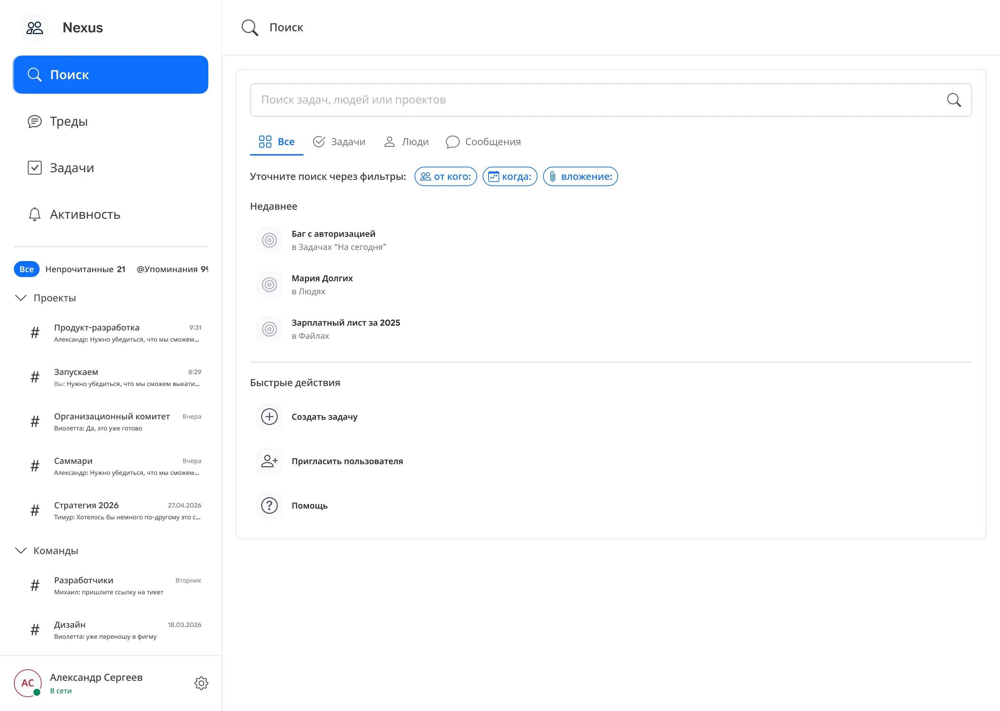

Итерации и выводы
После тестирования три источника данных: количественные показатели, тепловые карты кликов и открытые ответы. Работали в связке: один источник без двух других даёт неполную картину.
Подход к приоритизации
Каждую найденную проблему оценивали по двум критериям: блокирует ли она достижение результата (P0 или P1) и насколько просто исправить. Проблемы P0 с простым фиксом шли первыми. Проблемы, требующие концептуального пересмотра, в отдельный список «будущие итерации».
Пример работы с данными в связке: низкий success rate у Ф2 можно было интерпретировать как «функция непонятна». Но тепловые карты показали: те, кто находил точку входа, проходили флоу быстро и без затруднений. А открытые ответы дали конкретику: «далеко спрятана функция». Вывод: не концепция, а обнаруживаемость.
Ф2: точка входа в статусы (P1)
Проблема. Аватар пользователя в нижней части сайдбара: слабая точка входа. Из 10 участников несколько не находили её вообще. Один шёл в настройки конкретного чата, другой кликал на иконку уведомлений: ментальная модель «статус это про меня» не считывалась.
Правки. Добавили явную кнопку «Установить статус» рядом с аватаром: текстовая метка, а не только иконка. Текстовые кнопки обнаруживаются лучше, особенно для функций, которые пользователь ещё не знает. Дублировали вход из шапки чата: через иконку рядом с именем пользователя. Второй маршрут для тех, кто мысленно связывает «статус» с тем, как они выглядят для других в переписке.
На экране детальных настроек добавили визуальные разделители между блоками каждого статуса. До правки четыре блока (В сети, Не беспокоить, На встрече, Не в сети) выглядели как один длинный список параметров. После правки каждый статус в своей карточке с заголовком.
Ожидаемый эффект: success rate с 70% до 80%+. Основная гипотеза: большинство провалов было на этапе поиска точки входа, а не самой функции.
Ф3: обнаруживаемость фильтров (P2)
Проблема. Фильтры-чипы под строкой поиска не воспринимались как интерактивные элементы частью пользователей. Выглядели как текстовые метки, не кликали. Часть не замечала вообще. Дополнительно: часть шла не в глобальный поиск, а в раздел «Файлы» конкретного чата: ожидаемый, но неверный маршрут.
Правки. Добавили иконки в каждый чип: «от кого» получил иконку человека, «когда»: иконку календаря, «вложение»: иконку скрепки. Иконки в интерактивных элементах: стандартный приём для повышения affordance, они сигнализируют «это кнопка». Добавили подсказку под строкой при пустом запросе: «Уточните поиск через фильтры». Одна строка, которая направляет взгляд вниз: туда, где чипы. В разделе «Файлы» конкретного чата добавили ссылку «Найти через поиск».
Ожидаемый эффект: success rate с 71% до 80%+, за счёт снижения доли пользователей, которые открывали поиск и не трогали чипы.

Ф1: визуальная иерархия на экране резюме (P3)
Проблема. Три кнопки действий на экране готового резюме («Закрепить в чате», «Создать задачу», «Редактировать») выглядели как равнозначные. Часть пользователей нажимала «Редактировать» первым и застревала в редакторе без ощущения, что задача выполнена.
Правки. «Закрепить в чате» оформили как primary action: полная ширина кнопки, насыщенный цвет заливки. «Создать задачу» и «Редактировать» как secondary actions: outline-кнопки меньшего веса, расположены ниже. Добавили подпись под кнопкой «Закрепить»: «Станет видно всем участникам». Убирает неопределённость «что произойдёт, если нажму»: один из главных источников нерешительности у пользователей.
Ожидаемый эффект: снижение времени выполнения для тех, кто доходил до финального экрана. Рост success rate незначительный: большинство проблем было с обнаружением плашки, не с финальным экраном.
Итоговые статусы всех гипотез
| Гипотеза | Функция | Success rate | Полезность | Итог |
|---|---|---|---|---|
| Н1: снижение стоимости входа в контекст | Ф1: AI-суммаризация | 81.3% | 4.0/5 | Подтверждена |
| Н2: прозрачность доступности | Ф2: статусы и автоответы | 70.0% | 4.1/5 | Подтверждена (навигация требует доработки) |
| Н3: доступ к файлам по фильтрам | Ф3: поиск файлов | 71.4% | 4.5/5 | Подтверждена (findability требует доработки) |
| Н4: фиксация договорённостей | Ф4: создание задачи | 91.7% | 4.2/5 | Подтверждена |
Что за рамками этой работы
Полевое исследование с реальной командой (4–8 недель). Прототип проверяет юзабилити сценария. Реальная эксплуатация проверяет другое: меняется ли поведение команды? Формируются ли нормы вокруг статусов? Начинают ли люди реально фиксировать задачи или возвращаются к старым паттернам? Это самый важный следующий шаг для Ф2: функция работает только если её использует вся команда.
Тестирование Ф1 с реальной языковой моделью. В прототипе суммаризация была статичной. Реальная LLM ведёт себя иначе: у неё могут быть ошибки, галлюцинации, неточности в атрибуции. Насколько пользователи будут доверять автоматически сгенерированному резюме: отдельный исследовательский вопрос.
A/B-тест точек входа для Ф2 и Ф3. Правки после тестирования обоснованы качественно. Количественное подтверждение (вариант А vs вариант Б) было бы надёжнее, особенно для Ф2.
Мобильная версия. Вся работа выполнена для desktop. Ф2 (статусы) и Ф4 (создание задачи) на мобильном имеют другой контекст использования: быстрее, на ходу, меньше экранного пространства. Отдельная дизайн-задача.
Три вывода из этого проекта
Исследование работает тогда, когда меняет решение. Пришли в проект с интуитивными гипотезами. Исследование изменило приоритеты конкретно: H3 (поиск файлов) оказался проблемой менеджеров, а не всех. H4 (задачи) оказался острее, чем думали. Паттерн «непрочитанное как todo» мы вообще не ожидали найти. Если бы проектировали на интуиции, получили бы другой продукт.
Воркэраунды: артефакты отсутствующей функциональности. Каждый устойчивый обходной путь указывает на функцию, которой нет. Самый продуктивный вопрос в UX-исследовании: «как вы справляетесь с этим сейчас?», а не «что бы вы хотели изменить?».
Findability и юзабилити: разные проблемы. Все четыре концепции подтверждены. Все провалы в тестировании были на уровне обнаруживаемости, а не использования. Функция может быть отлично спроектирована, и при этом не работать: до неё просто не добираются. Hi-fi тестирование нашло это. Ло-фай или дизайн-ревью не найдут.